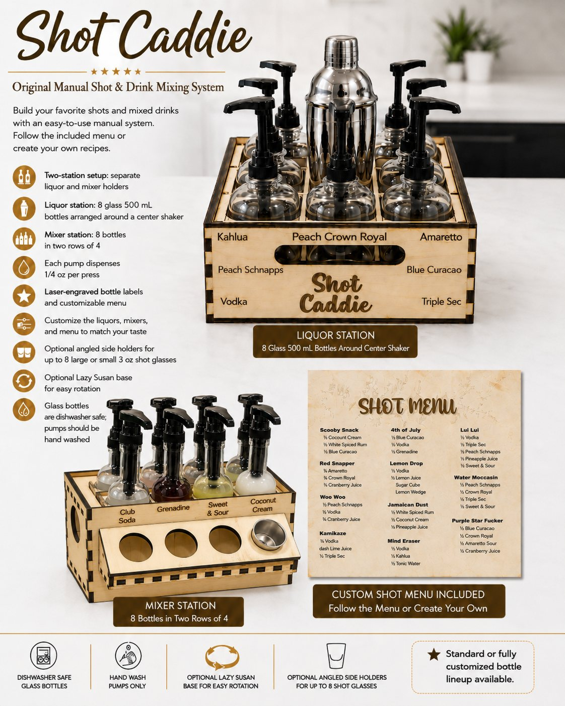

Manual system
Shot Caddie Original
Your 19th hole, perfected. A two-station manual mixing system: follow the engraved menu in quarter-ounce presses, or pour it your way.

Two caddies. Endless possibilities.
Built for quality. Designed for fun.
Liquor caddie
Eight 500 mL glass bottles arranged around a center shaker for mixing.
Mixer caddie
Eight bottles in two rows of four — your juices, sodas, and syrups.
Quarter-ounce pumps
Every press dispenses ¼ oz, so pours stay consistent drink after drink.
Laser-engraved labels
Each bottle's contents engraved on the outside — clean, permanent, and stylish.
Your lineup, your menu
Use our standard liquors and mixers, or send your own list and we engrave it.
Easy cleanup
Glass bottles are dishwasher safe; pumps should be hand washed.
Optional Lazy Susan
Add a rotating base to either station and spin to the bottle you need.
Optional glass holder
A side holder keeps up to eight large or small shot glasses right at hand.
How a round works
Read the board. Press. Pour.
Stock your stations
Fill the glass bottles with your liquors and mixers. The contents are laser-engraved right on each bottle, so nobody grabs the wrong one.
Read the board
Every recipe on the engraved menu is written in pump counts — for example, "2 presses Mixer A + 1 press Liquor C."
Press and pour
Each press dispenses ¼ oz. Making four shots at once? Multiply the counts by four.
Shake and serve
Ice goes in the center shaker. Mix, pour, and get back to the game.
From the standard board
- Scooby Snack
- Woo Woo
- Kamikaze
- Lemon Drop
- Red Snapper
- 4th of July
- Jamaican Dust
- Mind Eraser
- Lui Lui
- Water Moccasin
The details
Scorecard
| Stations | Liquor caddie (8 bottles around a center shaker) + mixer caddie (8 bottles in two rows of 4) |
|---|---|
| Pour | ¼ oz per pump press — consistent pours every time (approximate; varies slightly with the liquid and how the pump is pressed) |
| Bottles | 500 mL glass, dishwasher safe. Pumps should be hand washed. Storage caps included. |
| Construction | Laser-cut wood stations with laser-engraved bottle labels and engraved wood menu board |
| Menu | Standard lineup matched to the included recipe board, or a fully custom engraved menu and matching labels |
| Options | Lazy Susan rotating base for each station · side holder for up to 8 large or small shot glasses |
| Availability | In development — preorder opens with the Kickstarter launch. Join the list. |
| Standard or fully customized bottle lineup available. Great for home bars, parties, events, and business. | |
Standard or custom
Your setup, your way
Standard menu: choose the standard liquors-and-mixers lineup that matches our included recipe board. Bottles and labels come engraved to match.
Custom menu: send us your own bottle names and recipe list. We engrave a custom wood menu board and matching bottle labels to suit your taste. A simple menu-builder workflow is coming — upload your list, approve a proof, and we engrave and ship.

Launch list
Be first on the tee
Preorders open with the Kickstarter launch. Join the list for timing, photos, and announcements.
Opens your email app with a ready-to-send message — no signup needed. No spam, just Shot Caddie updates.